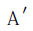
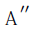

理化学の進歩が国運の発展に緊要であるという事は永い間一部の識者によって唱えられていたが、時機の熟せなかったため一向に世間には顧みられなかった。欧洲の大戦が爆発して以来は却って世間一般特に実業者の側で痛切にこの必要を感ずるようになったと見え、公私各種の理化学的研究所が続々設立されるようになった。それと同時に文部省でも特に中等教育における理化学教授に重きをおかれるようになって、単に教科書の講義を授くるのみならず、生徒自身に各種の実験を行わせる事になり、このために若干の補助費を支出する事になった。これは非常によい企てである。どうかこのせっかくの企てを出来るだけ有効に遂行したいものである。
自分は中等教育というものについては自分でこれを受けて来たという以外になんらの経験もないものであるが、ただ年来大学その他専門学校で物理実験を授けて来た狭い経験から割出して自分だけの希望を述べてみたいと思う。勿論我田引水的のところもあろうが、ただこれも一つ参考として教育者の方々に見て頂けば大幸である。
云うまでもなく、物理学で出逢う種々の方則等はある意味で非常に抽象的なものであって、吾人の眼前にある具体的な、ありのままの自然そのものに直接そっくり当て
嵌められるようなものはほとんどないとも云われる。「ＡがあればＢが生ずる」というような簡単な言葉で云い表わしてある方則には、通例「ただＡだけがあってその他の因子……等がないならば」という意味を含めてある。例えば「落体がある場所で九・八メートル／秒秒の加速度をもって垂直に落下する」というのでも、実は地球の重力のみ働き空気の抵抗や電気磁気などの作用がないとした場合の事である。しかるに実際物体を落す場合に完全な真空で完全に他の力を除外して実験する事はなかなか面倒である。実際重力加速度ｇを定めるにはこのような直接の方法によらず、却って間接に振子の週期と長さから定め、空気の抵抗の影響は必要に応じて理論から計算した補正で除去する事が出来るのである。天体の影響などは云うに足らぬし、普通の場合ならば電気や磁気の影響は小さいであろうが、しかしもし不注意にも鉄の振子を強い磁石の傍で振らせたり、あるいは軽い振子の場合に箱のガラスが荷電していたりしては決して正しい結果は得られるはずはない。箱の中でなく風のある部屋でむき出しの振子を振らせても同様である。それで一つの方則を実験しようというならば、その実験を支配し得る種々の原因要素を分解して、その内から特にその方則に指定した要素のみを抽出し、他のものを除くようにしなければ予定の結果を得る事は出来ない。少し極端な云い分ではあるが、物理学の方則というものは決して完全には実現し得られない抽象的事実の云い表わしであって、ただ条件を「方則の条件」に近くすればするほど、結果も漸近的にどこまでも「方則の結果」に近よるといった方が却って穏当かもしれない。
こういう事を全く考えずに、ただ物理学教科書のみによって物理学を学んでいれば事柄は至極簡単で、太平無事であるが、
一と
度書物以外に踏みだして実験をするという事になり、始めてありのままの自然に面するとなると、誠に厄介な事になって来る。若干の柔道の型を覚えていても敵と組打をやるとなれば敵の方で型の通りになってくれないと一般、眼前の自然は教科書の自然のように注文通りになっていてくれぬから難儀である。
例えば早い話が教科書や試験問題には長さ一メートルの物差とか一グラムの
分銅とかいう言葉が心配げもなく使ってあるが、実際には決して精密に一メートルとか一グラムとかいう量に出逢う機会は皆無と云ってよい。ただ必要に応じて差しつかえのない程度まで単位の長さや重さに近いように作ったものに過ぎない。生徒に実験を授ける際に一度は必ずこういう点にも注意を喚起しなければならぬと思う。紙の尺度や竹の尺度などを比較させて見るもよかろうし、また十グラムの分銅二つと二十グラムの分銅一つとを置換して必ずしも同じでない事を示し、精密なる目的には尺度の各分劃、分銅の各個につき補正を要する事や、温度による尺度の補正などの事も、少なくもそういうものがあるくらいは、中学校でも授けておきたいと思う。少なくも精密の度というものは比較的のものである事をよく理解させるが肝要であると思う。
また「大きさ一様なる棒」とか「平面」とか「球面」とかいうものも厳密には実現し得られない事も忘れてならない。長いガラスの円筒の直径をカリパーのようなもので種々の点で測らせ、その結果を適当な尺度に図示して径の不同を目立たせて見るのもよい。これはつまらぬ事件のようであるが、実際自分の経験では存外生徒の実験的趣味を喚起する効果があるようである。あるいは顕微鏡のデッキグラスの厚さを測微計で測らせ、また後に光学の部で再びこれを試験用平面に重ね、単色光で照らして干渉の
縞を示すも有益であろう。
液体静力学の実験例えば
浮秤で水や固体の比重を測る時でも、毛管現象が如何に多大の影響を有するかという事を見せるために、液面に石鹸の片を触れて比重系の浮上がる様を見せる事なども必要と思う。あるいは夏季水道の水を汲んだままで実験していると溶けた空気が出て来て器械に附着し著しい誤りを生ずる事なども実験させた方がよいと思う。
その他「完全なる剛体」とか「摩擦なき面」とか「一定の温度」とか一々枚挙に
遑はないが、こういう言葉を如何に理解し如何に自然界に適用すべきかという事を実験の途中で漸次に理解させるが肝要であろうと思う。これを誤解すれば、物理学を神の掟のように思って
妄信してしまうか、さもなくば反対に物理学の価値を見損なって軽侮してしまうかの二つに一つである。
物理の実験である予定の結果に到達しようとするには、その結果を支配し得べきあらゆる条件要素を考えてみて、眼前の目的とする原因のみを特に作用させ他の要素は出来得る限りこれを除き、簡単にしあるいは一定にしなければならぬ。しかるにこの種々な要素の数はなかなか多くてこれに注意を配るのはあまり容易な事ではない。必然に成効するためにはすべての点に対する注意が円満に具足しなければならぬ。誠に簡単なような実験でもその成効を妨げるような条件は無数にあって、成効の途はただ一つしかない。少し油断をすると思いがけない掃除口から泥棒がはいるようなことになる。例えば
天秤で重量を測るにしても、箱の片側に日光が当って箱の中の空気の対流を生じたり、腕の比が変ったり、蓋の隙間から風がはいったり、刃のところに塵がたまっていたり、皿に水滴が付いていたりするのに、このような事には一切構わず、ただ機械的に「物理実験法」に書いてある方式通りの測り方をするようでは実験を練習する甲斐はほとんどない。これでは小使にでもやらせてその結果の報告を聞くだけでもよいようなものであろう。ビーカーに水を汲むのでも、マッチ一本するのでも、一見つまらぬようなことも自分でやって、そしてそういうことにまでも観察力判断力を働かすのでなければ効能は少ない。使用する器械が精巧なほど使用の注意も複雑になるから、不注意に機械的申訳的にやるのでは却って粗末な方法でするよりも悪い結果になることが往々ある。先生の方で全部装置をしてやって、生徒はただ先生の注意する結果だけに注意しそれ以外にどんな現象があっても黙っているようなやり方では、効力が少ないのみならず、むしろ有害になる
虞がある。御膳を出してやって、その上に箸で口へ持ち込んでやって丸呑みにさせるという風な育て方よりも、生徒自身に箸をとってよく選り分け、よく味わい、よく
咀嚼させる方がよい。すぐ消化され吸収されるものばかりでなく、折々は不消化物も与えないと胃の機能が衰えるようなもので、実験中に起るべき種々の困難に出来るだけ遭遇させ、漸次これを除いて最後の結果に到着すると同時に、目的以外の現象にも注意してそれを
等閑に附せないような習慣をつけたいものである。
数十種の実験を皮相的申訳的にやってしまうよりも、少数の実験でも出来るだけ徹底的に練習し、出来るだけあらゆる可能な困難に当ってみて、必成の途を明らかにするように
勉める方が遥かに永久的の効果があり、本当の科学的の研究方法を覚える助けになるかと思う。実験を授ける効果はただ若干の事実をよく理解し記憶させるというだけではなく、これによって生徒の自発的研究心を喚起し、観察力を練り、また困難に遭遇してもひるまずこれに打勝つ忍耐の習慣も養い、困難に打勝った時の愉快をも味わわしめる事が出来る。その外観察の結果を整理する技倆も養い、正直に事実を記録する癖をつける事やこのような一般的の効果がなかなか重要なものであろう。
物理実験を生徒に示すのは手品を見せるのではない。
手際よくやって驚かす性質のものではなく、むしろ如何にすれば成功し如何にすれば失敗するかを明らかにする方に効果がある。それがためには教師はむしろ出来るだけ多く失敗して、最後に成効して見せる方が教授法として適当であるかと思う。ここにちょっとデリケートな問題が起る。このような点から考えると物理実験を授けるべき教員は、教える前に自分で十分にすべての実験を練習し、あらゆる場合に遭遇し、あらゆる困難を切り抜けて来なければならないかという疑問が起る。しかしこれは云うべくして行い難い注文であって、そのような人を求めた所でそれは無理な事である。相当な専門家でもすべての場合にぶっつかって少しもまごつかぬという人は甚だ稀であろう。しかしこの点は少しも心配することはないと思う。もともと実験の教授というものは、軍隊の教練や昔の漢学者の経書の講義などのように高圧的にするべきものではなく、教員はただ生徒の主動的経験を適当に指導し、あるいは生徒と共同して新しい経験をするような
心算ですべきものと思う。簡単な実験でも何遍も繰返すうちには四囲の状況は種々に変化するから、結果に多少の異同や
齟齬を来すのは常の事である。このような場合における教員の措置
如何は生徒の科学的精神の死活に関するような影響を有するものと思う。この場合に結果を都合のよいようにこじつけたり、あるいは
有耶無耶のうちに葬ったり、あるいは予期以外の結果を故意に回避したりするような傾向があってはならぬ。却って意外な結果や現象に対しては十分な興味をもってまともに立向かい、判らぬ事は判らぬとして出来る限りの熱心と努力をもってその解決に勉めなければなるまい。これは一見生徒の前に自分の無知を表白するように見える。ことに中学程度の生徒には教員の全知全能を期待するような傾向があるとすれば、なおさら教員の立場は苦しい訳であろう。しかしそれはほんの一時の困難であろうと思われる。一通りの知識と熱心と忍耐と誠実があらば、そうそう解決のつかぬような困難の起る事は普通の場合には稀である。そのうちに生徒の方でも実験というものの性質がだんだん分って来ようし、教員の真価も自ずから明らかになろうと思う。そういう事を理解するだけでもその効能はなかなか大きいものであろう。これに反して誤った傾向に生徒を導くような事があっては生徒の科学的の研究心は
蕾のままで無惨にもぎ取られるような事になりはしないかと恐れるのである。
以上はただ一個の学究の私見で一つの理想に過ぎない。多数の学者ことに教育者の側から見れば不都合な点も多くあるかもしれないし、自分でも十分に意を尽さぬために誤解を生じはせぬかと思う点もあるが、ともかくも思うままを
誌して大方の
叱正を待つのである。
（大正七年六月『理学界』）